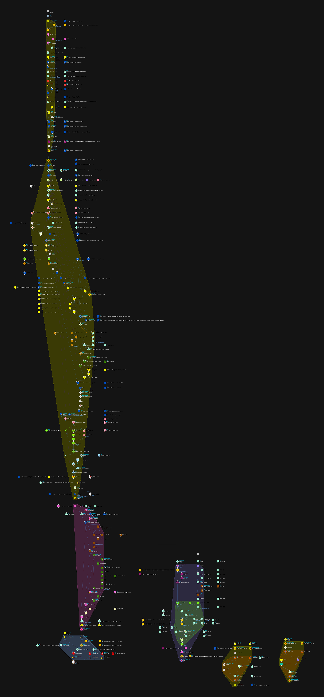

| BUY NOW | |
| STUDIO LICENSE | 1-4 ARTISTS | STUDIO LICENSE | 5-9 ARTISTS |
| STUDIO LICENSE | 10-19 ARTISTS | STUDIO LICENSE | 20-50 ARTISTS |
|
For more than 50 people, please contact us |
|
Companies that use Pragmatic VEX |
|
Professionals who use Pragmatic VEX are working at |
|
Pragmatic VEX is a highly planned, highly edited series aimed to increase the technical capacity of artists and TDs. This series will enable you to tackle more complex production shots with complete control and ease by acquiring a deeper technical understanding of how things work in Houdini at the lowest level with a strong applied focus on high-end feature film visual effects production. Through carefully structured lessons, you'll gain the low-level understanding and control required for high-complexity shots in Houdini. The techniques taught in Pragmatic VEX have been proven in major feature film productions, including blockbusters like The LOTR: The Rings of Power, Star Wars, Aquaman, X-Men and more, ensuring you learn production-proven methods used at the highest levels of VFX production.
Created by Yunus "animatrix" Balcioglu,
currently a
Senior
FX Technical Director
at Industrial Light & Magic. Feature film credits include
The Lord of the Rings: The Rings of Power,
Marvel's Eternals,
Star Wars: The Rise of Skywalker,
X-Men: Dark Phoenix, X-Men:
Apocalypse,
Aquaman, Alien:
Covenant, Pirates of the Caribbean: Dead Men Tell No
Tales,
Justice League and many more. |
 |
|
Pragmatic VEX is featured on ASUS ProArt showcase series. |
|
Pragmatic VEX is showcased in GamesCom Asia 2022 (Singapore) while demonstrating a KineFX driven face peeling FX setup. |
|
Pragmatic VEX is a carefully structured course where every single topic, concept and idea is planned in advance with no idle moments, dead space, gratuitous talking or unplanned debugging for what should have been done offline. |
|  |
|
Some of the intricate planning inside the network editor for a single topic. |
|
The course avoids the typical pitfalls of improvised tutorials. Every lesson is carefully scripted and edited for clarity. Topics are introduced with live concept sketches, then demonstrated step-by-step in Houdini, ensuring you fully grasp the idea before applying it. All course content is recorded in 4K resolution, providing pristine visual clarity for optimal learning in any device whether it's a tablet or a high resolution large display. |
|
Provided in this course are over 15 hours of high-density practical video content spanning 163 videos. |
|
Almost all cook times and idle moments are edited out, and some parts are sped up (2-5x) like concept drawing, code writing, viewport/network navigation, and node layout, etc. The focus is on quality rather than total running time, and as such the course length is not the best way to estimate the actual value. |
|
That's why I don't spend 1 hour explaining what a string is, or how to call a function as there are so many resources online covering those to exhaustion. They will be assumed knowledge. Basic courses are plenty, it's the advanced courses that are scarce. |
|
If you feel that, at any point, you are lacking some prerequisites, I would highly recommend referring to Houdini documentation. |
|
Pragmatic VEX covers as many areas that have relevant areas to have a solid volume with a similar theme and flow, that not only progressively scales up on complexity and intricacy, but is also filled with countless practical production-proven tips and tricks from beginning to end. |
|
Topics covered:
Korean translation (WIP) by Seona Hwang.
Rendered using Redshift. |